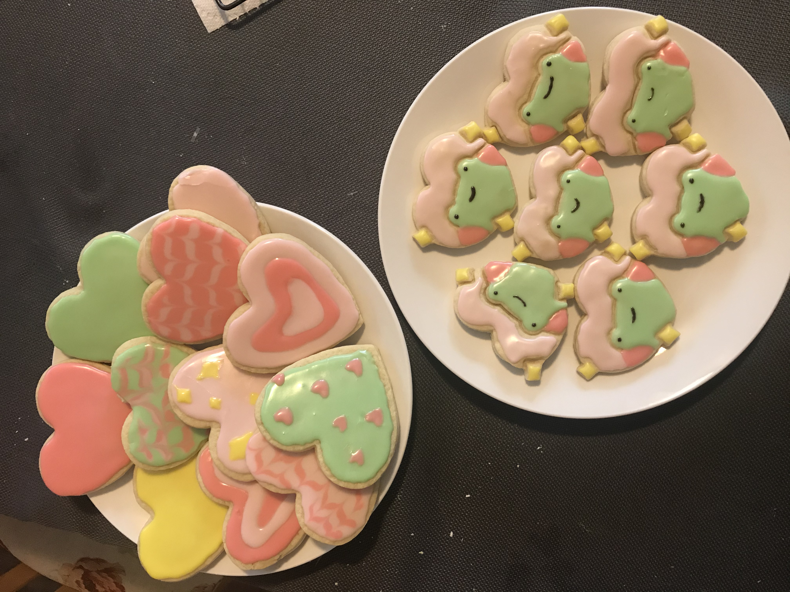

“there are some sturdy sugar cookies that exist mostly as a canvas for elaborate designs and crack sharply in two when you snap them in half. but these are not those kind of cookies. these crispy‐edged, soft‐centered classics will bend when you attempt to split them, the gooey center gently sloping into a craggy break, the crumbs holding on for dear life. follow the recipe as written and, thanks to the sour cream, you’ll get a much-upgraded version of the premade sugar cookie logs you can buy from the store. make them fancy, with sprinkles, marbling1, or a dusting of cocoa powder, and they’ll be pretty enough to grace any holiday party.”
recipe courtsey of: tasty desserts recipe book • with credits to buzzfeed, the parent company

homemade version of the recipe
total:
2 hours
prep:
30 minutes
inactive:
1.5 hours
cook:
10 minutes
yield:
24 cookies
ingredients
3 1⁄2 cups all purpose flour, plus more for dusting
1 1⁄2 teaspoons baking soda
1⁄2 teaspoon kosher salt
1 cup (2 sticks) unsalted butter, at room temperature
3⁄4 cup granulated sugar
1 large egg
1⁄2 sour cream
1 teaspoon vanilla extract
directions
in a medium bowl, whisk together the flour, baking soda, and salt.
combine the butter and sugar in a large bowl. using a handheld mixer, beat on medium-high speed until light and fluffy, about 5 minutes. add the egg and beat until fully incorporated. add the sour cream and vanilla and mix until smooth. add the flour mixture and mix on low speed until just combined.
transfer the dough to a lightly floured work surface and form it into a disc. wrap the disc in plastic wrap and refrigerate until chilled, about 1 hour.
preheat the oven to 300ºF. line two baking sheets with parchment paper.
on a lightly floured work surface, roll out the chilled dough to 1⁄2 thick. use a 3-inch round cutter to cut out circles of dough and place them on the prepared baking sheets, leaving about 1 inch between each circle. alternatively: cut out the shapes of your choice!
bake until the bottoms of the cookies are pale golden brown and the tops are matte, 8 to 10 minutes. transfer the baking sheets to wire racks and let the cookies cool on the pans for 2 minutes. using a flat metal spatula, transfer the cookies to the racks and let cool completely, about 20 minutes.